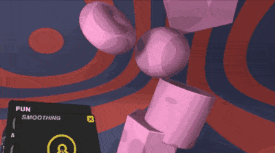
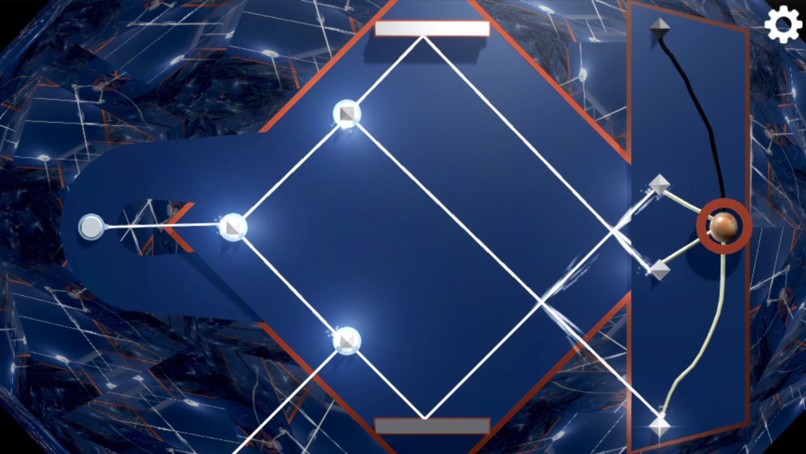
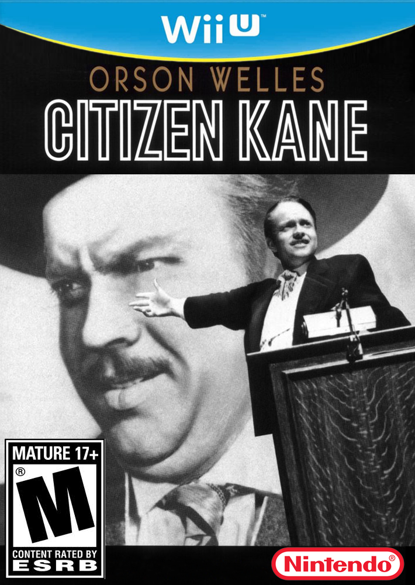

layout: true class: inverse --- class: middle, center, inverse @kevinwatters ## Jamming a Game in .limitwidth[] .titleimg[] --- class: inverse, center # I am @kevinwatters🏳🌈🏃🤓 ### startup engineer --- class: inverse, center # I am @kevinwatters🏳🌈🏃🤓 ### startup engineer turned VR and gamedev freelancer -- .pull-left[<video autoplay loop width="45%" src="images/blackout.mp4" type="video/mp4">] -- .pull-right[<video autoplay loop width="45%" src="images/zerodays2.mp4" type="video/mp4"> ] -- .pull-left[] -- .pull-right[] --- name: games-art  # why typescript? --- template: games-art ## games === art --- template: games-art ## ~~games === art~~ ## games == art -- ### but also... --- name: games-art-math # why typescript? ## ~~games === art~~ ## games == art ### but also... ## games are systems -- ## games use math -- ### math is painful without strong typing -- (imo) --- ```typescript @AutoComponent.register export class Trigger extends AutoComponent<TriggerOpts> { triggerEvery:number; hitbox: Hitbox; lastTrigger:number = -1; ```